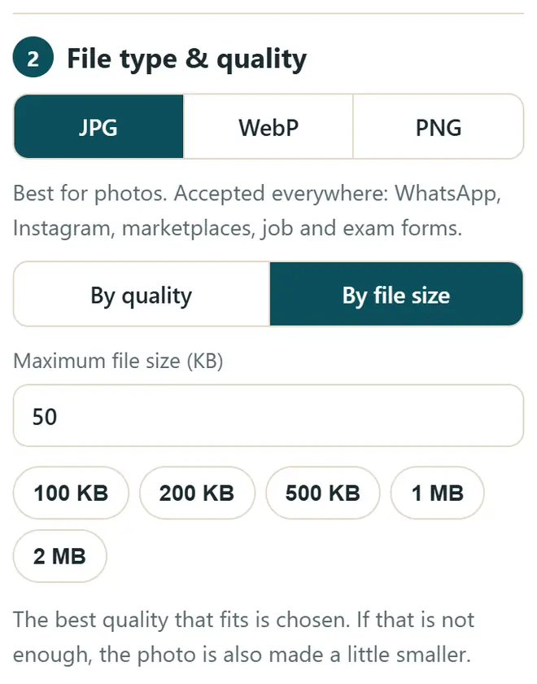

ഫോട്ടോ 20 KB അല്ലെങ്കിൽ 50 KB-യിലേക്ക് കംപ്രസ് ചെയ്യുന്നത് എങ്ങനെ
ഫോട്ടോ 50 KB-യിൽ താഴെയാകണമെന്ന് ഫോം പറയുന്നു; നിങ്ങളുടെ ഫോൺ ഫോട്ടോയോ 3 MB. എവിടെയും അപ്ലോഡ് ചെയ്യാതെ, കുറച്ച് ടാപ്പുകളിൽ അത് പരിധിക്കുള്ളിലാക്കുന്നത് എങ്ങനെയെന്ന് ഇവിടെ കാണാം.
ചുരുക്കത്തിൽ ഉത്തരം
ഇമേജ് കംപ്രസർ & റീസൈസർ തുറന്ന്, “ഫോട്ടോകൾ തിരഞ്ഞെടുക്കുക” അമർത്തി, സൈസിൽ “അതേ വലുപ്പം, ചെറിയ ഫയൽ” തിരഞ്ഞെടുക്കുക. കംപ്രഷനിൽ “ഫയൽ വലുപ്പം അനുസരിച്ച്” തിരഞ്ഞെടുത്ത്, “പരമാവധി ഫയൽ വലുപ്പം (KB)” എന്നതിൽ 20, 50 അല്ലെങ്കിൽ നിങ്ങൾക്ക് വേണ്ട പരിധി ടൈപ്പ് ചെയ്യുക. പരിധിക്കുള്ളിൽ ഒതുങ്ങുന്ന ഏറ്റവും നല്ല ക്വാളിറ്റി ആപ്പ് തിരഞ്ഞെടുക്കും. ഫോട്ടോ ഡൗൺലോഡ് ചെയ്ത് അതിന്റെ സൈസ് പരിശോധിക്കുക.
5 ഘട്ടങ്ങളിൽ ഫോട്ടോ കംപ്രസ് ചെയ്യൂ
-
ഫോട്ടോകൾ ചേർക്കുക
ഇമേജ് കംപ്രസർ & റീസൈസർ തുറന്ന് “ഫോട്ടോകൾ തിരഞ്ഞെടുക്കുക” അമർത്തുക. ഒരേസമയം 100 ഫോട്ടോകൾ വരെ ചേർക്കാം: JPG, PNG, WebP അല്ലെങ്കിൽ iPhone HEIC.
-
സൈസ് തിരഞ്ഞെടുക്കുക
വീതിയും ഉയരവും അതുപോലെ നിലനിർത്താൻ “അതേ വലുപ്പം, ചെറിയ ഫയൽ” തിരഞ്ഞെടുക്കുക. ഫോം നിശ്ചിത പിക്സൽ ചോദിച്ചാൽ “സ്വന്തം വലുപ്പം” തിരഞ്ഞെടുത്ത് വീതിയും ഉയരവും ടൈപ്പ് ചെയ്യുക.
-
JPG നിലനിർത്തി, ഫയൽ സൈസ് അനുസരിച്ച് കംപ്രസ് ചെയ്യുക
ഫയൽ തരം JPG തന്നെ വയ്ക്കുക: അത് മിക്കവാറും എല്ലായിടത്തും സ്വീകരിക്കും. കംപ്രഷനിൽ “ഫയൽ വലുപ്പം അനുസരിച്ച്” തിരഞ്ഞെടുക്കുക.
-
KB പരിധി ടൈപ്പ് ചെയ്യുക
“പരമാവധി ഫയൽ വലുപ്പം (KB)” എന്നതിൽ 20, 50, 100 അല്ലെങ്കിൽ നിങ്ങളുടെ ഫോം അനുവദിക്കുന്നത്ര ടൈപ്പ് ചെയ്യുക. ആപ്പ് പല ക്വാളിറ്റി നിലകൾ പരീക്ഷിച്ച്, പരിധിക്കുള്ളിൽ ഒതുങ്ങുന്ന ഏറ്റവും നല്ലത് നിലനിർത്തും. അത് പോരെങ്കിൽ ഫോട്ടോ അല്പം ചെറുതാക്കുകയും ചെയ്യും.

ഫയൽ സൈസ് അനുസരിച്ച് കംപ്രസ് ചെയ്ത്, പരിധി KB-യിൽ ടൈപ്പ് ചെയ്യുക. -
പരിശോധിച്ച് ഡൗൺലോഡ് ചെയ്യുക
ഓരോ ഫോട്ടോയ്ക്കും ഒപ്പം അതിന്റെ മുമ്പും ശേഷവുമുള്ള സൈസ് കാണാം. “മുമ്പ് / ശേഷം” കാണാൻ ഫോട്ടോയിൽ ടാപ്പ് ചെയ്യുക. പിന്നെ “ഓരോന്നായി ഡൗൺലോഡ് ചെയ്യുക” അല്ലെങ്കിൽ “എല്ലാം ഡൗൺലോഡ് ചെയ്യുക (ZIP)” അമർത്തുക.

മുമ്പും ശേഷവും: ഫോട്ടോകൾ പരിധിക്കുള്ളിലാണ്.
വളരെ ചെറിയ ഫയലുകൾക്കുള്ള നുറുങ്ങുകൾ
- 20 KB ഫയലിൽ അധികം വിശദാംശങ്ങൾ കൊള്ളില്ല. ആദ്യം ഫോട്ടോയിലെ പ്രധാന ഭാഗം ക്രോപ്പ് ചെയ്യുക അല്ലെങ്കിൽ കുറഞ്ഞ പിക്സൽ സൈസ് തിരഞ്ഞെടുക്കുക: അതേ KB-യിൽ ചിത്രം കൂടുതൽ വ്യക്തമായി കാണും.
- PNG-യെ KB പരിധിയിലേക്ക് ചുരുക്കാൻ കഴിയില്ല. JPG തിരഞ്ഞെടുക്കുക; വെബ്സൈറ്റ് സ്വീകരിക്കുമെങ്കിൽ WebP.
- നിശ്ചിത പിക്സൽ, KB പരിധി, DPI എന്നിവ ചോദിക്കുന്ന പരീക്ഷ, ജോലി ഫോമുകൾക്ക് ഫോം ഫോട്ടോ & ഒപ്പ് റീസൈസർ കൂടുതൽ എളുപ്പമാണ്: ഫോം സൈസുകൾ അതിൽ നേരത്തെ തന്നെയുണ്ട്.
- ചിത്രത്തിന് പകരം ചെറിയ PDF വേണോ? PDF കംപ്രസ് & JPG-ൽ നിന്ന് PDF ഉപയോഗിക്കുക.
പുതിയ സൗജന്യ ടൂളുകളും ഹിന്ദിയിൽ AI പാഠങ്ങളും നേടൂ
ഞങ്ങളുടെ ഇമെയിൽ ലിസ്റ്റിൽ ചേരൂ: പുതിയ സൗജന്യ ആപ്പുകൾ, പുതിയ ഗൈഡുകൾ, AI-യെക്കുറിച്ചുള്ള ഹിന്ദി വീഡിയോ പാഠങ്ങൾ എന്നിവയുടെ വിവരം നിങ്ങൾക്ക് ലഭിക്കും. സ്പാം ഇല്ല.
മുതിർന്നവർക്ക് (18+) മാത്രം. എപ്പോൾ വേണമെങ്കിലും പേര് ഒഴിവാക്കാം.
ഈ ടൂളുകൾ ഞങ്ങൾ എന്തുകൊണ്ട് നിർദ്ദേശിക്കുന്നു
- എല്ലാവർക്കും സൗജന്യം: പരസ്യമില്ല, സൈൻ-അപ്പില്ല, പണമടച്ചുള്ള പ്ലാനില്ല.
- സ്വകാര്യം: നിങ്ങളുടെ ഫയലുകളും വിവരങ്ങളും നിങ്ങളുടെ സ്വന്തം ഉപകരണത്തിൽ മാത്രം.
- ഫോൺ, ലാപ്ടോപ്പ്, സ്മാർട്ട്ബോർഡ് എന്നിവയിൽ പ്രവർത്തിക്കും, ഒരിക്കൽ തുറന്നാൽ ഇന്റർനെറ്റ് ഇല്ലാതെയും.
- മലയാളവും ഹിന്ദിയും ഉൾപ്പെടെ 12 ഭാഷകളിൽ.
വീഡിയോയിലൂടെ പഠിക്കാൻ ഇഷ്ടമാണോ? ഞങ്ങളുടെ YouTube ചാനലിൽ AI-യും സൗജന്യ ടൂളുകളും സംബന്ധിച്ച ഹിന്ദി പാഠങ്ങൾ കാണുക.
പതിവ് ചോദ്യങ്ങൾ
ഫോട്ടോ 20 KB ആക്കുന്നത് എങ്ങനെ?
“ഫയൽ വലുപ്പം അനുസരിച്ച്” തിരഞ്ഞെടുത്ത് “പരമാവധി ഫയൽ വലുപ്പം (KB)” എന്നതിൽ 20 ടൈപ്പ് ചെയ്യുക. ഫോട്ടോ വലുതാണെങ്കിൽ, പരിധിക്കുള്ളിൽ ഒതുങ്ങാൻ ആപ്പ് അതിന്റെ പിക്സലും കുറയ്ക്കും. കൂടുതൽ വ്യക്തമായ ഫലത്തിന് ആദ്യം ഫോട്ടോ ക്രോപ്പ് ചെയ്യുക അല്ലെങ്കിൽ ചെറിയ സൈസ് തിരഞ്ഞെടുക്കുക.
50 KB അല്ലെങ്കിൽ 100 KB ആണെങ്കിലോ?
അതേ രീതിയിൽ: 50 അല്ലെങ്കിൽ 100 ടൈപ്പ് ചെയ്യുക. 5 KB മുതൽ മുകളിലേക്ക് ഏത് പരിധിയും ടൈപ്പ് ചെയ്യാം.
ഫോട്ടോ മോശമായി കാണുമോ?
ചെറിയ ഫയൽ എന്നാൽ വിശദാംശങ്ങൾ കുറയും. നിങ്ങളുടെ പരിധിക്കുള്ളിൽ ഒതുങ്ങുന്ന ഏറ്റവും നല്ല ക്വാളിറ്റി തന്നെ ആപ്പ് എപ്പോഴും തിരഞ്ഞെടുക്കും; ഡൗൺലോഡിന് മുമ്പ് “മുമ്പ് / ശേഷം” നോക്കി പരിശോധിക്കാം.
എന്റെ ഫോട്ടോകൾ അപ്ലോഡ് ആകുന്നുണ്ടോ?
ഇല്ല. അവ നിങ്ങളുടെ ബ്രൗസറിനുള്ളിൽ തന്നെ മാറ്റപ്പെടുന്നു; നിങ്ങളുടെ ഉപകരണം വിട്ട് പോകില്ല. GPS ലൊക്കേഷൻ പോലുള്ള മറഞ്ഞിരിക്കുന്ന വിവരങ്ങളും പുതിയ ഫയലിൽ നിന്ന് നീക്കപ്പെടും.
പല ഫോട്ടോകൾ ഒരുമിച്ച് കംപ്രസ് ചെയ്യാമോ?
ചെയ്യാം, ഒരേസമയം 100 വരെ. ഓരോന്നായോ എല്ലാം ഒരു ZIP ഫയലായോ ഡൗൺലോഡ് ചെയ്യുക.
ഉപകാരപ്പെട്ടോ?
ഒരു സുഹൃത്തിനോ സഹപ്രവർത്തകർക്കോ നിങ്ങളുടെ സ്കൂളിന്റെ WhatsApp ഗ്രൂപ്പിലേക്കോ അയയ്ക്കുക.